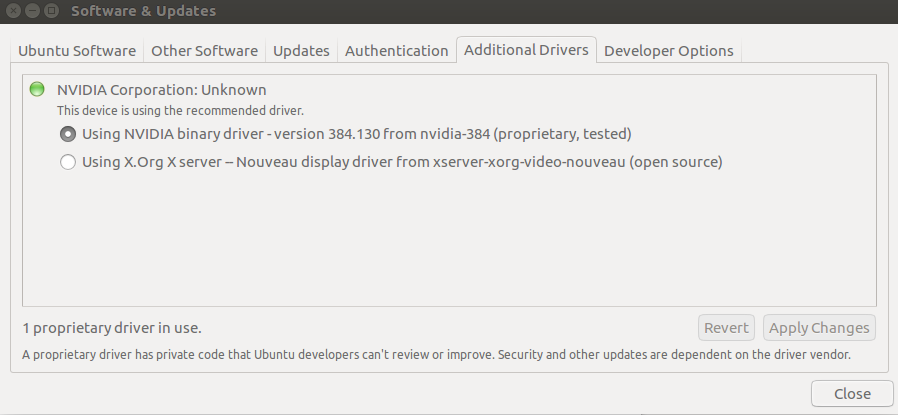
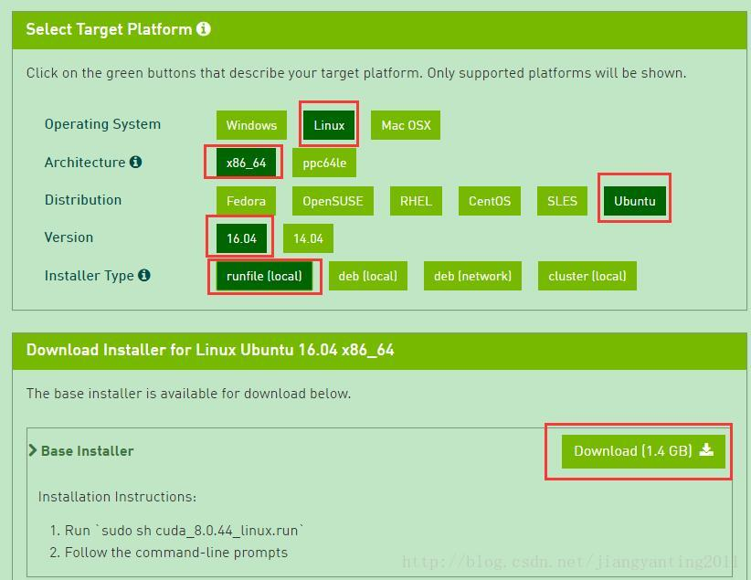
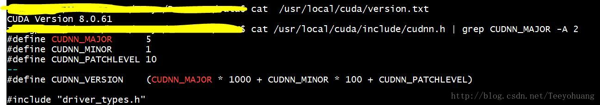
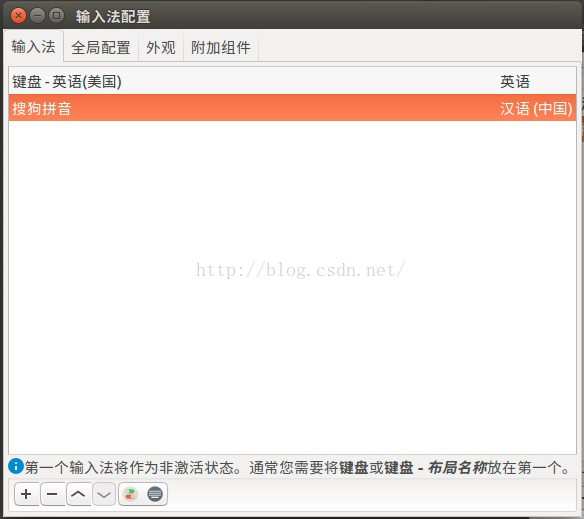
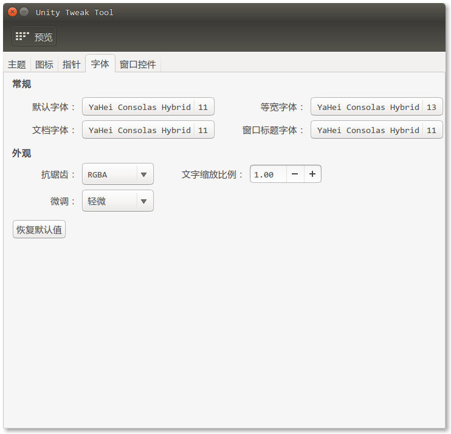

DeepLearning环境配置简要指南
Ubuntu下配置深度学习环境过程比较繁琐，这里整理一下，方便大家搭建环境，也欢迎大家在这里分享踩到的坑～
指南索引：
[TOC]
话不多说，进入正题～
1. 安装Ubuntu16.04 + 换源
（1） 制作启动盘
找到合适的镜像，然后使用UltralSO制作启动盘，从BIOS里面选择U盘启动，然后安装。
（2） 安装
如果是已有Windows10系统现在要装双系统的话，要在Win10的磁盘管理里面压缩出一块100G（具体看个人需求）大小的空间，SSD或者机械盘都可以，我这里是安装在SSD上，以此为例。然后安装Ubuntu的过程中，它会自己检测到电脑已有Win10系统，问你是否安装Ubuntu16与其共存，选择共存就可以，安装程序会自动检索到之前那块已经分配出来的空间，然后自己分好区并安装上系统。
另外，建议安装时选择英语，这样文件夹名称什么的都是英文的，方便后续使用（虽然我也不知道安装中文的会有什么麻烦 /摊手）。
（3） 换源
安装完Ubuntu 16.04后，要更换为国内的软件源：
1 | $ sudo gedit /etc/apt/sources.list #用文本编辑器打开源列表 |
在文件开头添加中科大或阿里云或清华的软件源，可以在网上搜到。
然后更新软件源：sudo apt-get update 即可，更多软件源可以自行搜索。
【源的问题，更详细可以参考ustc官方教程】
2. 更新显卡驱动
在Additional Drivers里面找到Additional Drivers选项，选择NVIDIA384的显卡驱动，点击Apply Changes:

然后重启电脑，（应该）会有不一样的感觉。
3. 安装CUDA
（1）下载CUDA
首先在NVIDIA官网下载CUDA，选择自己合适的版本。
该链接界面只显示最新版本。若需要下载以前的版本，可在页面下方点击Legacy Releases，选择自己需要的其他版本。

（2）安装CUDA
下载完成后执行以下命令：
1 | $ sudo chmod 777 cuda_8.0.44_linux.run |
（注意：执行后会先出现一个声明，需要阅读到100%，同意声明后才会开始安装。）
安装时首先会有一系列提示让你确认，但是注意，有个让你选择是否安装nvidia361驱动时，一定要选择否：
Install NVIDIA Accelerated Graphics Driver for Linux-x86_64 361.62?
因为前面我们已经安装了更加新的nvidia384，所以这里不要选择安装。其余的都直接默认或者选择是即可。
可能出现的错误：
安装cuda时可能有下面的信息
Installing the CUDA Toolkit in /usr/local/cuda-8.0 …
Missing recommended library: libGLU.so
Missing recommended library: libX11.so
Missing recommended library: libXi.so
Missing recommended library: libXmu.so
原因是缺少相关的依赖库,安装相应库就解决了：
1 | $ sudo apt-get install freeglut3-dev build-essential libx11-dev libxmu-dev libxi-dev libgl1-mesa-glx libglu1-mesa libglu1-mesa-dev |
再次安装,就不再提示了。
(3) 环境变量配置
打开~/.bashrc文件： sudo gedit ~/.bashrc 将以下内容写入到~/.bashrc尾部：
1 | $ export PATH=/usr/local/cuda-8.0/bin${PATH:+:${PATH}} |
(4) 测试CUDA的samples
1 | $ cd /usr/local/cuda-8.0/samples/1_Utilities/deviceQuery |
如果显示一些关于GPU的信息，则说明安装成功。
4. 配置cuDNN
先看一下系统当前的cuda和CUDNN版本：

（1）下载
本次示例安装的是cudnn6.0，对应的cuda版本是8.0，先从官网上下载需要的安装包：cudnn-8.0-linux-x64-v6.0.tgz
然后对其进行解压处理：tar -zxvf cudnn-8.0-linux-x64-v6.0.tgz
解压后得到一个cuda文件夹，cd进入之后，复制一些东西到我们之前安装cuda的路径下（/usr/local/cuda/），我们可以先看看cuda里面有什么：一个include文件夹，和一个lib64文件夹
（2）拷贝
进入该文件夹后拷贝一些东西到指定目录1
2
3$ cd cuda
$ sudo cp lib64/lib* /usr/local/cuda/lib64/
$ sudo cp include/cudnn.h /usr/local/cuda/include/
（3）软连接
进入 /usr/local/cuda/lib64/ 路径下，更新cuDNN库文件的软连接，命令如下：
1 | $ sudo chmod +r libcudnn.so.6.0.21 |
然后就OK了，现在可以用上面的命令查看cuDNN的版本，你好我也好，可以看到已经是6.0.xx了。
5. 安装Anaconda*
去官网下载安装即可，然后可以手动创建虚拟环境，比较方便。
注：有一些软件需要py2.7的环境，比如XX-Net， 最好是先安装Anaconda2，这样系统默认的环境是py2。需要py3环境时，用下面的命令创建虚拟环境就好了：
1 | conda create -n virenvname python=3.5 |
6. 配置caffe
见博客：Ubuntu16.04 CUDA8.0+caffe+gpu运行环境配置，后半部分有详细讲述。
7. 安装tensorflow-gpu和keras*
对于tf需要的py版本，先用conda创建个虚拟环境，然后使用下面的命令安装tf-gpu和keras：
1 | pip install tensorflow-gpu==1.4 |
(建议版本号如上，具体需求看项目而定）
安装完毕后，输入python，然后输入：
1 | import tensorflow |
没有报错即可。
如果科学上网条件允许的话，可以下载keras中的mnist数据集测试，下载keras开发包并测试：
1 | git clone https://github.com/fchollet/keras.git |
【这里有坑】
（1）在pycharm里跑代码的时候，有可能会报类似如下的错：
libcusolver.so.8.0: cannot open shared object file: No such file or directory
以及其他一大堆文件索引地址==
这个可以先检查LD_LIBRARY_PATH:
1 | echo $LD_LIBRARY_PATH |
一般会在这个位置： /usr/local/cuda-8.0/lib64
然后执行以下命令：
1 | sudo ldconfig /usr/local/cuda-8.0/lib64 |
这样问题就解决了。
(2)如果上面安装tf和keras的时候，keras版本超过了2.1（好像2.1.6就不行了），跑你的keras模型的代码的时候，大概率会报错：
TypeError: softmax() got an unexpected keyword argument ‘axis’
这是因为安装的keras版本较高导致的，解决很简单，激活keras所在的虚拟环境（如果有的话），然后输入
1 | pip install keras==2.1 |
再运行就不会报这个错了。
8. 安装中文输入法*
Ubuntu 的键盘输入法系统包含iBus、fcitx等多种，因为sogou是基于fcitx的，而系统默认的是iBus，所以安装使用不同的输入法，相关的键盘输入法系统也要设置改变。
（1）安装sogou输入法：
首先到搜狗输入法官网下载搜狗输入法，下载的是个deb文件。
Ubuntu 16.04安装搜狗输入法命令如下：
1 | sudo apt-get install -f |
deb文件名，要和自己下载的版本一致。
- 安装完毕，设置语言选项.
到系统设置->语言支持（System->Language Support），将键盘输入法系统由默认的iBus设置为fcitx。操作此步骤时，如果没有出现fcitx选项，说明你的机器还需要安装fcitx键盘输入法系统，直接看第二部分fcitx的安装。
- 重启，点击右上角的输入法图标，点击设置（Configure），然后这时候还看不到搜狗输入法，点击左下角的加号，去掉“只显示当前语言的输入法”，然后搜索“sogo”就可以看到新安装的“sogo pinyin”了，添加之后，就可以切换输入法了.
一般切换输入法的快捷键是ctrl+space。

注意: 安装搜狗输入法之前请先更换为国内的软件源，否则无法解决依赖问题。
（2）安装fcitx键盘输入法系统
sogou是基于fcitx的，而系统默认的键盘输入法系统是iBus。Ubuntu 16.04默认是带有fcitx的，正常安装，如果有的话，按上面步骤即可完成；但有些版本的Ubuntu，需要自己安装 fcitx，才能安装使用sogou。
- 添加以下源: sudo add-apt-repository ppa:fcitx-team/nightly
- 更新系统： sudo apt-get update
- 安装fcitx： sudo apt-get install fcitx
- 安装fcitx的配置工具： sudo apt-get install fcitx-config-gtk
- 安装fcitx的table-all软件包: sudo apt-get install fcitx-table-all
- 安装im-switch切换工具： sudo apt-get install im-switch
至此，fcitx键盘输入法系统就安装好了。第5，6步需要按键“Y”确认安装。简单测试的方法就是在终端键入“fcitx”，有各种提示就对了。
安装完fcitx后，再安装sogou即可。
9. 更换默认字体*
在ubuntu下，pycharm并没有常用的consolas字体，可以用DejaVu Sans Mono字体作为替代方案，但是中文显示又不是很美观，于是考虑consolas + 微软雅黑的字体方案：
（1）下载字体
然后命令行安装：1
2
3
4
5
6
7
8
9
10
11
12
13
14
15
16
17//解压压缩包
tar -zxvf YaHeiConsolas.tar.gz
//在系统目录下创建自定义字体目录
sudo mkdir -p /usr/share/fonts/vista
//复制解压出来的字体到刚才创建的目录
sudo cp YaHeiConsolas.ttf /usr/share/fonts/vista/
//修改字体权限
sudo chmod 644 /usr/share/fonts/vista/*.ttf
//进入字体目录
cd /usr/share/fonts/vista/
//刷新并安装字体
sudo mkfontscale && sudo mkfontdir && sudo fc-cache -fv
老规矩，该重启啦。
（2）配置pycharm或系统字体
完成后，现在我们已经可以在pycharm里面找到这个字体了（YaHeiConsolas），选择并应用就好。
如果想把系统的字体也换成这个，则需要软件中心安装Unity Tweak Tool这个软件，点击运行，找到“字体”选项，然后就可以根据自己想改变字体的位置来修改了：

至此，Ubuntu16.04下深度学习的环境配置以及日常使用配置就基本完成了。
欢迎填坑～～～